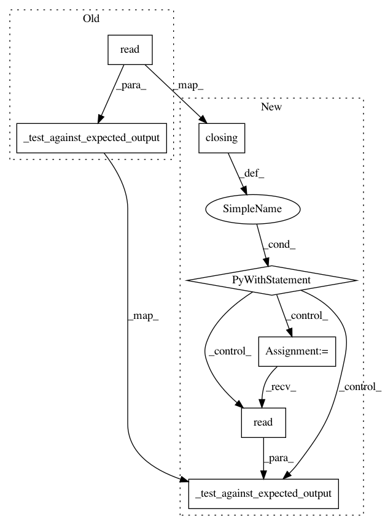

d131e25d86e6bd79e4c1b3bd707d5d63209193ef,nltk/test/unit/test_stem.py,PorterTest,test_vocabulary_nltk_mode,#PorterTest#,79
Before Change
)
def test_vocabulary_nltk_mode(self):
self._test_against_expected_output(
PorterStemmer.NLTK_EXTENSIONS,
data.find("stemmers/porter_test/porter_nltk_output.txt")
.open(encoding="utf-8")
.read()
.splitlines()
)
def test_vocabulary_original_mode(self):
// The list of stems for this test was generated by taking the
// Martin-blessed stemmer from
After Change
)
def test_vocabulary_nltk_mode(self):
with closing(data.find("stemmers/porter_test/porter_nltk_output.txt").open(encoding="utf-8")) as fp:
self._test_against_expected_output(
PorterStemmer.NLTK_EXTENSIONS,
fp.read().splitlines()
)
def test_vocabulary_original_mode(self):
// The list of stems for this test was generated by taking the
// Martin-blessed stemmer from
// http://tartarus.org/martin/PorterStemmer/c.txt
In pattern: SUPERPATTERN
Frequency: 3
Non-data size: 7
Instances
Project Name: nltk/nltk
Commit Name: d131e25d86e6bd79e4c1b3bd707d5d63209193ef
Time: 2017-01-07
Author: markamery@btinternet.com
File Name: nltk/test/unit/test_stem.py
Class Name: PorterTest
Method Name: test_vocabulary_nltk_mode
Project Name: nltk/nltk
Commit Name: d131e25d86e6bd79e4c1b3bd707d5d63209193ef
Time: 2017-01-07
Author: markamery@btinternet.com
File Name: nltk/test/unit/test_stem.py
Class Name: PorterTest
Method Name: test_vocabulary_martin_mode
Project Name: nltk/nltk
Commit Name: d131e25d86e6bd79e4c1b3bd707d5d63209193ef
Time: 2017-01-07
Author: markamery@btinternet.com
File Name: nltk/test/unit/test_stem.py
Class Name: PorterTest
Method Name: test_vocabulary_original_mode